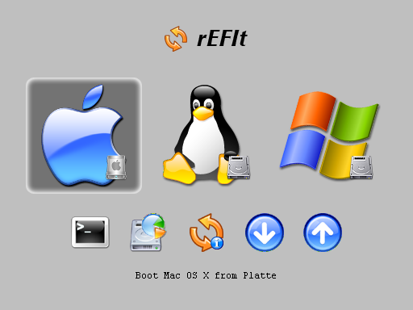

Si vous êtes utilisateur de Mac et que vous souhaitez installer vos trois systèmes d'exploitation et pouvoir les utiliser ou, comme moi, pour vos études, vous aurez besoin d'avoir Windows et Linux sans que vous n'ayez à perdre votre OS favori alors suivez ce tutoriel et vous arriverez à vos fins.
Si vous avez passé le titre, c'est que vous voulez réaliser ce triple boot ou que vous avez besoin de le réaliser. Je vais donc commencer par présenter plus en détail ce que nous allons faire. J'ai choisi de vous montrer l'installation de ce triple boot avec la distribution Ubuntu 12.04 car non seulement, il s'agit de la dernière version (LTS de surcroît), mais en plus elle dispose d'un tutoriel sur ce site et il s'agit de la version dont j'ai eu besoin pour ma formation. Je précise également qu'Ubuntu supporte mal les écrans Retina, je déconseille donc l'installation sur ce Mac. Quant à Windows, j'installerais la dernière version connue et distribuée actuellement : Windows 7. Mac OS X dispose d'un outil très simple d'utilisation pour installer Windows en dual boot qui ne supporte plus que cette version.
Ce tutoriel est construit de sorte que vous puissiez créer un dual boot OS X/Ubuntu uniquement. Je préciserai à chaque étape ce qui est inutile de faire pour le cas d'un dual boot OS X/Ubuntu ou OS X/Windows. ;)
Introduction
Nous allons dans un premier temps installer Mac OS sur une partition qui utilisera le disque complet. Ensuite, nous installerons Windows via l'assistant Boot Camp qui configurera une partie du système et créera une partition dédiée à Windows. Enfin, nous ajouterons une partition dédiée à Ubuntu. Nous aurons donc trois partitions et une quatrième, créée automatiquement par Mac OS lors de son installation, destinée à l'EFI. Nous ne pourrons donc pas créer de partition commune aux trois OS à cause de Windows. En effet, windows ne permet pas de gérer plus de quatre partitions primaires or ici, nous en avons une par système d'exploitation plus une pour l'EFI.
Les points forts
Les points fort d'une telle configuration sont, premièrement pour l'installation de vos logiciels dédiés à chaque OS et éviter ainsi l'utilisation d'un logiciel tel que WINE. Le second et le plus gros des avantages, à mon sens, est le fait que le système d'exploitation est seul à tourner, il n'est pas dans une machine virtuelle installée sur un autre système d'exploitation, il est donc possible d'exploiter toutes les ressources de votre ordinateur.
Les points faibles
Le plus gros point faible d'une telle configuration est l'impossibilité de changer d'OS sans avoir à redémarrer la machine, il s'agit d'un triple boot et non d'une installation dans une machine virtuelle. Le second est l'impossibilité d'avoir une partition de données commune aux trois OS dû à la partition de l'EFI.
Pré-requis
Matériel
Un câble réseau : Ubuntu ne supporte pas la carte Wi-Fi du Mac nativement
Un CD pour graver votre image disque d'Ubuntu
Une clé USB d'au moins 1Go pour graver la même image disque d'Ubuntu (je vous expliquerais pourquoi)
Votre DVD d'installation de Windows
Le fichier DMG de l'installation de Mac OS X (pour Lion et Mountain Lion uniquement, les autres versions disposant d'un DVD d'installation)
Il vous faudra également rEFIt (choisissez Mac disk image)
Et enfin, un logiciel Mac pour graver votre image ISO de linux. J'ai choisi Burn, mais n'importe que autre fonctionnera. L'Utilitaire de disque présent dans Mac OS ne permet pas de graver cette image pour une raison qui m'est inconnue :-° .
Préparation du matériel
Comme je suppose que vous saurez utiliser votre logiciel pour graver votre image ISO sur votre CD, je vais vous laisser faire cette partie.
Windows est déjà sur un DVD donc pas la peine d'en faire une copie ^^ .
Pour Mac OS, si vous avez OS X Lion ou Mountain Lion, que vous l'avez déjà téléchargé et conservé, vous pourrez trouver le DMG dans le paquet "Install Mac OS X Lion.app" (ou "Install Mac OS X Mountain Lion.app") cliquez droit dessus puis sélectionnez "Afficher le contenu du paquet" et là parcourez les dossiers Contents/Shared Support, là copiez-collez le DMG InstallESD.dmg où vous souhaitez, il vous faudra ensuite le graver sur un DVD. Pour cela ouvrez l'utilitaire de disque, cliquez sur "Graver" sélectionnez votre image disque là où vous l'avez placée précédemment puis lancez la gravure.
Vous voilà presque prêt. Il ne reste plus qu'à créer votre clé USB à partir de l'image ISO d'Ubuntu. Il faut tout d'abord convertir l'image ISO en image IMG par le terminal, vous le trouverez dans /Applications/Utilitaires/Terminal.app ou en effectuant une recherche SpotLight.
hdiutil convert -format UDRW -o ~/Desktop/ubuntu-12.04.img ~/Desktop/ubuntu-12.04.iso
# Mac OS ajoute l'extension .dmg, retirez-la :
mv ubuntu-12.04.img.dmg ubuntu-12.04.img
Pensez à adapter ces deux lignes, j'ai supposé que l'image ISO était nommée ubuntu-12.04.iso et qu'elle se situait sur votre bureau. Il va maintenant falloir trouver quels disques sont déjà présents sur votre machine, retirez donc tous vos périphériques et entrez la commande :
diskutil list
# Vous devriez avoir quelque chose qui ressemble à ceci :
/dev/disk0
#: TYPE NAME SIZE IDENTIFIER
0: GUID_partition_scheme *320.1 GB disk0
1: EFI 209.7 MB disk0s1
2: Apple_HFS Macintosh HD 249.9 GB disk0s2
3: Apple_Boot Recovery HD 650.0 MB disk0s3
4: Microsoft Basic Data 29.3 GB disk0s4
5: Microsoft Basic Data BOOTCAMP 40.0 GB disk0s5
Repérez /dev/disk0, il s'agit de votre disque dur principal, branchez votre clé usb puis relancez la commande, vous avez à nouveau /dev/disk0 et un autre a du s'ajouter à la liste /dev/disk1, c'est lui que vous utiliserez pour graver votre image. Démontez votre clé (pas éjecter) : diskutil unmountDisk /dev/disk1 finalement, on peut graver cette image !
Je vous conseille maintenant d'imprimer la suite du tutoriel : vous aurez besoin de redémarrer votre ordinateur plusieurs fois pour installer vos différents systèmes.
Dans cette partie, nous allons nous contenter d'installer Mac OS, nous partitionnerons notre disque plus tard : Windows ne permet pas d'être installé sur un disque comportant une table de partition GUID (GPT), il faudra donc utiliser l'assistant Boot Camp pour préparer le terrain.
Munissez vous donc de votre DVD de Mac OS X fraîchement créé et bootez dessus, rappelez vous votre touche C pour démarrer sur le lecteur optique ou votre touche opt (ou alt selon votre préférence d'appellation) puis sélectionnez le DVD pour démarrer dessus.
Une fois le démarrage fini, choisissez l'outil de partitionnement. Nous allons partir de zéro en créant l'unique partition qui accueillera Mac OS et supprimant toutes les données pour partir sur quelque chose de propre. Sélectionnez dans le menu de gauche le disque dur de votre Mac puis l'onglet "Partition". Là, sélectionnez le modèle "1 partition" et donnez lui le nom que vous voulez.
Revenez à l'écran principal du DVD et sélectionnez "Réinstaller Mac OS X" et suivez les indications d'installation. Passez enfin toute l'installation et la configuration de votre système. Vous pouvez prendre le soin de tout configurer maintenant ou d'y revenir plus tard.
Tant que nous sommes encore sous OS X, nous allons en profiter pour préparer rEFIt et faire quelques manipulations pour préparer l'installation d'Ubuntu.
Préparation de rEFIt
Ce petit logiciel va se lancer après l'exécution de l'EFI et avant le démarrage sur le disque par défaut, il s'agit d'une sorte de GRUB amélioré pour Mac qui permet de détecter les partitions Linux : l'EFI par défaut de votre Mac ne permet pas de sélectionner une partition de type ext4. Ouvrez donc le fichier DMG, que vous êtes supposé avoir sauvegardé quelque part pour le monter puis copier le dossier efi à la racine de votre disque dur. rEFIt est maintenant préparé, il ne nous restera plus qu'à l'activer, nous verrons cela à la fin du tutoriel avec quelques options de configurations en plus. ;)
Mise à jour et téléchargement des pilotes windows
Avant de rebooter pour installer Windows, mettez à jour votre système (menu Pomme > Mise à jour de logiciels…) afin de posséder la dernière version des pilotes qui seront à installer sous Windows. Lancez l'Assistant Boot Camp et sélectionnez le téléchargement de la prise en charge de Windows auprès d'Apple ainsi que "Installer Windows 7" qui paramètrera tout ce qu'il faut pour pouvoir installer Windows, sur l'étape suivante définissez la taille de votre partition Windows, pour ma part j'y affecterait 40Go ce qui laissera ensuite environ 25 à 30Go d'espace libre une fois Windows installé. Il vous faudra à ce moment là, votre DVD d'installation inséré dans votre lecteur. Le système ajoutera une partition pour windows et redémarrera en bootant tout seul sur votre DVD.
Si vous installez Windows sur un iMac, MacPro ou Mac Mini, munissez vous d'un clavier et d'une souris flaire, lors de l'installation de Windows et tant que les pilotes ne seront pas installés, vos claviers et souris sans fil ne seront pas pris en charge. Pour l'installation sur MacBook, MacBook Pro et Air, il faudra que vous fassiez attention : la disposition du clavier sera standard et non une disposition type Apple.
Rien de transcendant dans cette partie, vous avez déjà dû la réaliser plein de fois, cependant, nous sommes sur le Site du Zéro où on apprend de Zéro, je vais donc quand même décrire les points importants qui pourraient vous poser problème.
Passez les quelques premières étapes où il s'agit juste de cliquer sur "Suivant". ^^
Au moment de sélectionner la partition sur laquelle installer Windows, sélectionnez celle nommée "BOOTCAMP".
Puis formatez-la grâce au lien "Options de lecteur (avancé)", puis "Formater". La partition sera formatée au bon système de fichier (NTFS) qui est le seul système de fichier sur lequel Windows 7 peut être installé.
Là votre ordinateur redémarrera plusieurs fois tout seul et bootera ou non sur le DVD selon l'étape de l'installation : à ce moment, vous n'avez rien à faire sinon attendre la fin de l'installation jusqu'à la configuration de votre compte.
Une fois connecté, insérez votre CD, DVD ou clé USB sur lequel vous avez téléchargé les pilotes de prise en charge Windows par Apple et installez le tout puis redémarrez en pensant à maintenir votre touche opt enfoncée au démarrage pour sélectionner le système Mac OS. Je vous laisse faire cette étape seul vu la complexité de la tâche. :D
Avant de commencer l'installation d'Ubuntu, il faut lui créer sa partition, peu importe le système de fichier qu'il faudra de toute façon redéfinir. Commencez donc par lancer l'utilitaire de disques. Dans la partie gauche, sélectionnez le disque dur principal puis l'onglet "Partition".
Sélectionnez la partition sur laquelle est installée Mac OS ("Macintosh HD" pour ma part) puis ajoutez en une (le petit plus situé en dessous à gauche du graphique représentant votre disque dur). Là vous pouvez à nouveau nommer votre partition et la dimensionner comme vous le souhaitez. Mettez 30Go pour avoir un espace libre de 20 à 25Go une fois Ubuntu installé.
À partir de là, il vous faudra brancher votre câble réseau préparé en début tutoriel, je rappelle qu'Ubuntu ne supporte pas nativement la carte Wi-Fi de votre Mac. Branchez votre clé USB préparée en début de tutoriel également ainsi que le CD gravé. Il y a une particularité : si vous branchez uniquement votre clé USB ou utilisez uniquement votre CD gravé, le support ne permettra pas le boot jusqu'au bout. Je n'ai pas réussi à comprendre pour quelle raison ni à trouver de solution. Lors du reboot, il vous faudra maintenir vôtre touche opt enfoncée puis selectionner l'icone du CD avec inscrit Windows en dessous.
Je vous laisse choisir vos options d'installation au niveau des mises à jour et des logiciels tiers. Lorsqu'il vous est demandé de quelle manière installer Ubuntu, choississez "Autre chose". Vous avez ensuite la présentation de votre table des partitions, prenez le temps de bien annalyser les informations pour choisir la bonne partition si vous vous trompez il vous faudra certainement recommencer depuis le début. Il s'agit d'une partition de type hsf+ (celle de plus petite taille si vous avez utilisé les mêmes tailles que moi).
Pensez à sélectionner les bonnes options pour votre clavier Mac ainsi que nommer comme vous le souhaitez vos options de session. Une fois l'installation terminée, redémarrez. Nous allons finir d'installer et configurer rEFIt pour pouvoir choisir votre système d'exploitation lors du démarrage, je rappelle pour ceux qui auraient oublié que l'EFI ne permet pas de booter sur une partition ext4 !
Pour finir d'installer rEFIt, il va nous falloir passer par le Terminal. Une fois lancé, rendez vous dans le dossier /efi/refit que nous avons copié en tout début de tutoriel avec la commande cd /efi/refit puis exécutez le script ./enable-always.sh, il vous faudra entrer votre mot de passe. rEFIt est maintenant installé ! Si vous redémarrez, vous aurez l'écran suivant juste après le lancement de l'EFI :
Le menu de boot graphique
Comment sais-tu qu'il est lancé juste après l'EFI ?
Et bien c'est simple ! Lorsque vous démarrez votre Mac, maintenant la touche opt enfoncée, là vous aurez deux volumes affichés : rEFIt et Windows, sélectionnez rEFIt… Tada ! Vous avez le même menu que tout à l'heure ! :magicien:
Quelques points de configuration
Régler le temps d'affichage de rEFIt
Il est possible, tout comme GRUB de modifier le temps d'affichage de rEFIt, pour cela éditez avec TextEdit, vim ou tout autre éditeur de texte le fichier /efi/refit/refit.conf (les droits d'administrateur ne sont pas requis) à la ligne 9, il y a le mot clé timeout suivit d'un chiffre, il s'agit du nombre de secondes pendant le quel le menu est affiché, 10 secondes sont largement suffisantes.
Quelques options de sécurité
Avez vous remarqué les deux premières icones de la seconde ligne ? Il s'agit du shell de l'EFI et d'un outil pour la gestion des partitions, je vous conseille de les désactiver, il est possible de supprimer vos partitions et donc vos données importantes ! C'est à la ligne 28 que ça se passe, si vous lisez les commentaires du dessus vous comprendrez (du moins, si vous comprenez l'anglais technique) qu'il faut mettre les options sell et tools. Pour augmenter encore un peu cette sécurité, vous pouvez ajouter les options optical et external qui empêcheront l'affichage des CD, DVD et clés USB, il sera toujours possible de démarrer sur ces support en enfonçant la touche opt au démarrage. Votre ligne 28 doit donc ressembler à ceci : disable shell tools selon ce que vous avez choisi.
Personnalisation
Ce menu est un peu gris peut être pour vous, non ? Dans ce cas, vous pouvez créer votre image, au format BMP avec une profondeur allant de 2 à 24 bits. Il faudra placer votre image bmp à côté du fichier /efi/refit/refit.efi, décommenter la ligne 40 et donner le bon nom de fichier. La couleur de fond du menu (le gris par défaut) sera remplacée par la couleur se trouvant dans le coin supérieur gauche de votre image BMP.
Avez vous également remarqué l'image qui représente le curseur de sélection de l'OS sur le quel vous vous apprêtez à booter ? Le carré arrondi gris foncé par défaut sous la pomme sur l'image du dessus, vous pouvez également la remplacer ! Il vous faudra une image au format 144x144 pour la grande image et 64x64 pour les petites icônes de la seconde ligne. Si vous ne définissez que la petite icône, elle sera re-dimensionnée pour la sélection des OS, si vous ne créez qu'une grande icône, la petite icône sera celle par défaut.
Masquer les badges
Si les icônes représentant un disque dur situé en bas à droite des icônes des différents OS vous gênent, il est possible de les masquer à la ligne 61.
Si vous choisissez l'option none, tous les badges seront affichés, c'est l'option par défaut
Si vous choisissez l'option internal seules les partitions bootable du disque n'auront plus le badge
Si vous choisissez l'option all, aucune partition bootable n'aura de badge, cette option n'est pas recommandée : si vous bootez sur votre clé USB, que vous oubliez et la débranchez, elle risque d'être endommagée.
Masquer les options de l'interface
Dans la petite partie "Options de sécurité", je vous ai fait désactiver les possibilité d'utiliser la console EFI et l'outil de partition ce qui masque les icônes également, il est possible de masquer plus que ces deux icônes, voici la liste de tout ce qui est désactivable, il suffira de les aligner en les séparant par des espaces comme tout à l'heure.
banner : masquer la bannière (l'icone et le nom rEFIt ou votre bannière personnalisée)
shell : masquer l'icone représentant le shell (la première de la seconde ligne sur l'image plus haut)
tools : masquer l'utilitaire de disque
funcs : masquer les icônes de redémarrage, extinction et "à propos" (tools et funcs cachent toute la seconde ligne)
label : masquer les label qui apparaissent en bas lorsque vous survolez une options
hdbadges : masquer les badges des partitions internes
badges : masquer les badges de toutes les partitions (non recommandé pour les mêmes raisons que tout à l'heure)
all : masquer toutes les options sauf badges
Sélection par défaut
La dernière option que je voulais vous présenter est default_selection à la ligne 104 qui vous permet, à la manière de GRUB, en plus simple, de sélectionner quelle option sera sélectionnée par défaut, cela peut être un OS ou une option de la seconde ligne. Voici ce que vous pouvez mettre :
M : Sélectionner la partition Mac OS X
L : Sélectionner la partition Linux
W : Sélectionner la partition Windows
S : Sélectionner le shell EFI
P : Sélectionner l'outil de partitionnement
U : Sélectionner l'option d'extinction
Voilà, vous avez maintenant vos trois systèmes installés, vous pouvez les utiliser à souhait et bien entendu adapter selon vos besoin : installer une autre distribution de Linux par exemple.
Merci à tous ceux qui ont participé à l'amélioration du tutoriel et en particulier Petrus6 qui m'a aidé, fortement conseillé et encouragé dans la rédaction du tutoriel !
Excusez les quelques photos qui se sont glissées sur le tutoriel, je n'ai pas pu faire autrement :honte:
{kind=link}
{kind=link}
{kind=link}
{kind=link}
{kind=link}
{kind=link}
{kind=link}
{kind=link}
{kind=link}